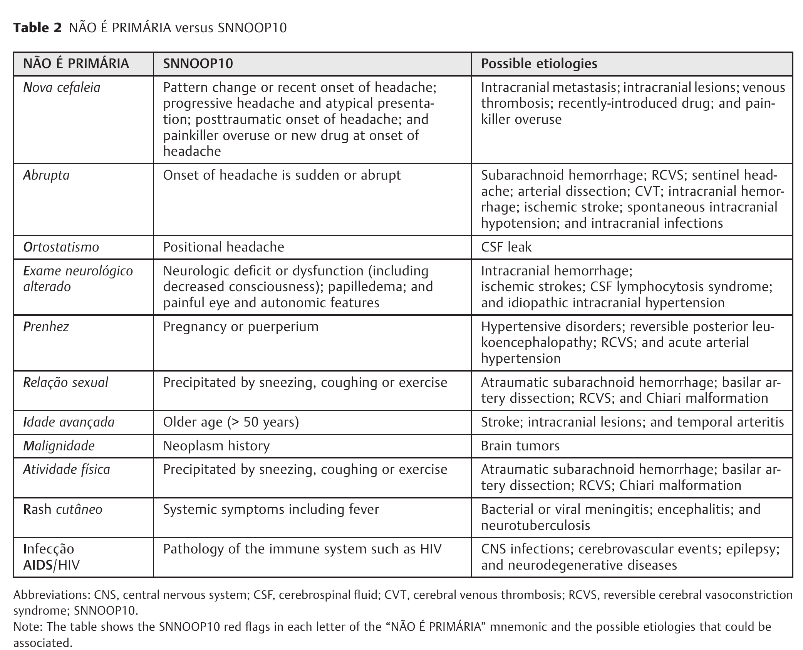

Página 10 · E6
Tabelão de alarmes e o mantra da triagem
Primeiro o alarme; depois o nome da cefaleia.
Tabelão completo
O inventário reúne os sinais de alarme — do início súbito ao papiledema — antes da definição etiológica. Depois dessa triagem, enxaqueca, tensional, salvas, meningite, ACG, HSV, abscesso, tumor e glaucoma exigem critérios e condutas próprios.
Três mantras
- Primeiro o alarme; depois o nome da cefaleia.
- Crises que se parecem — e exame que não mostra nada.
- Dor diferente da de sempre reabre o caso.
Depois da triagem inicial
Enxaqueca, tensional, salvas, meningite, ACG, HSV, abscesso, tumor e glaucoma exigem aprofundamento diagnóstico próprio. A capciosidade costuma estar nas nuances dos sinais de alarme e do enunciado; por isso, a abordagem sindrômica organiza a triagem em prova e prática antes do diagnóstico específico.

Quiz — fixação
-
Qual é o mantra-mãe da triagem?
Gabarito B. a ordem alarme → nome é a sequência central do raciocínio clínico.
(A) exame é por suspeita. (C) colapsa o binário. (D) nuance invertida. Cai por ansiedade de exame ou de rótulo etiológico precoce.
-
Qual alarme não deve ser omitido na triagem?
Gabarito A. TSV está na lista vascular do súbito — minúcia que a compressão apaga.
(B)(C)(D) são erros que a abordagem sindrômica corrige. Cai por escolher a opção “mais famosa” (HSA só) e marcar o resto como dispensável.
-
Paciente com enxaqueca prévia e dor igual à de sempre, sem alarme, exame normal:
Gabarito B. o trinômio limpo fecha primária; a reabertura exige diferença ou alarme.
(A) hiper-alarme sem gatilho. (C)(D) exames de outras suspeitas. Cai por generalizar a pegadinha “enxaqueca+HSA” para todo paciente com enxaqueca.